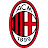

Classificação
| Clube | Pts | PJ | VIT | E | DER | GM | GC | SG | Ultimas 5 | ||
|---|---|---|---|---|---|---|---|---|---|---|---|
| 1 |

|
Liverpool | 21 | 8 | 7 | 0 | 1 | 17 | 5 | 12 |


|
| 2 |  |
Barcelona | 19 | 8 | 6 | 1 | 1 | 28 | 13 | 15 |

|
| 3 |  |
Arsenal | 19 | 8 | 6 | 1 | 1 | 16 | 3 | 13 |


|
| 4 |  |
Inter | 19 | 8 | 6 | 1 | 1 | 11 | 1 | 10 |
|
| 5 | Atlético de Madri | 18 | 8 | 6 | 0 | 2 | 20 | 12 | 8 |
|
|
| 6 |  |
Leverkusen | 16 | 8 | 5 | 1 | 2 | 15 | 7 | 8 |
|
| 7 |  |
LOSC | 16 | 8 | 5 | 1 | 2 | 17 | 10 | 7 |

|
| 8 |  |
Aston Villa | 16 | 8 | 5 | 1 | 2 | 13 | 6 | 7 |
|
| 9 |  |
Atalanta | 15 | 8 | 4 | 3 | 1 | 20 | 6 | 14 |
|
| 10 |  |
Borrusia | 15 | 8 | 5 | 0 | 3 | 22 | 12 | 10 |
|
| 11 |  |
Real Madrid | 15 | 8 | 5 | 0 | 3 | 20 | 12 | 8 |
|
| 12 |  |
Bayern | 15 | 8 | 5 | 0 | 3 | 20 | 12 | 8 |
|
| 13 |  | Milan | 15 | 8 | 5 | 0 | 3 | 14 | 11 | 3 |
|
| 14 |  |
PSV | 14 | 8 | 4 | 2 | 2 | 16 | 12 | 4 |
|
| 15 |  |
PSG | 13 | 8 | 4 | 1 | 3 | 14 | 9 | 5 |
|
| 15 |  |
Benfica | 13 | 8 | 4 | 1 | 3 | 14 | 9 | 5 |
|